ALL WORKS / 13 PROJECTS
三個面向的實作紀錄：從品牌與內容企劃、介面與前端實作，到互動系統的邏輯建構。
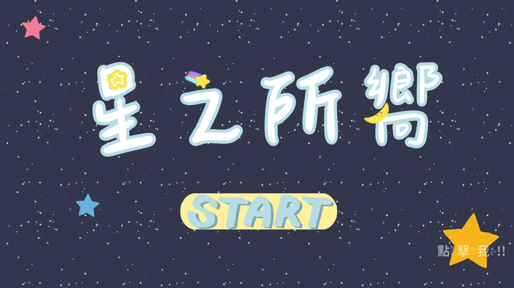
對接台灣親子觀星會，負責需求分析、數位企劃撰寫與互動程式開發，將天文知識轉譯為遊戲腳本與互動電子書
從 0 到 1 打造韓系中性選品品牌，完成品牌命名理念、受眾分析、Logo 視覺識別與社群基礎建置
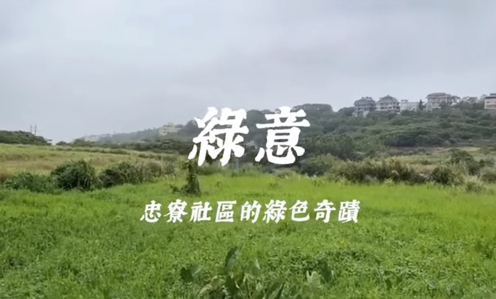
從腳本企劃、人物訪談到後期剪輯，將在地創生與魚菜共生議題轉譯為具溫度的影像
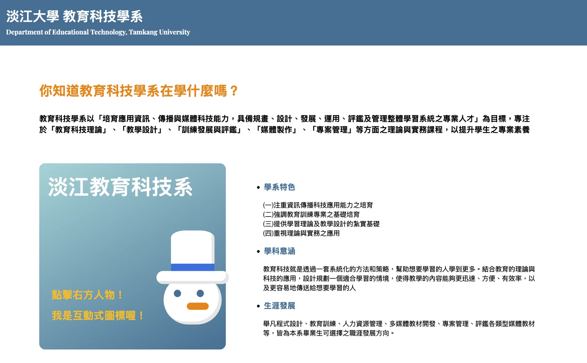
獨立開發系所介紹網站，導入 Pug 樣板引擎與 Sass 預處理器，並以 GitHub 進行版本控管
科技部高中職音樂教材導入案，銜接 UI 視覺與程式邏輯，完成前端介面事件觸發與系統實作。獲 TAECT 學生組第二名，並參展第 13 屆師培研討會
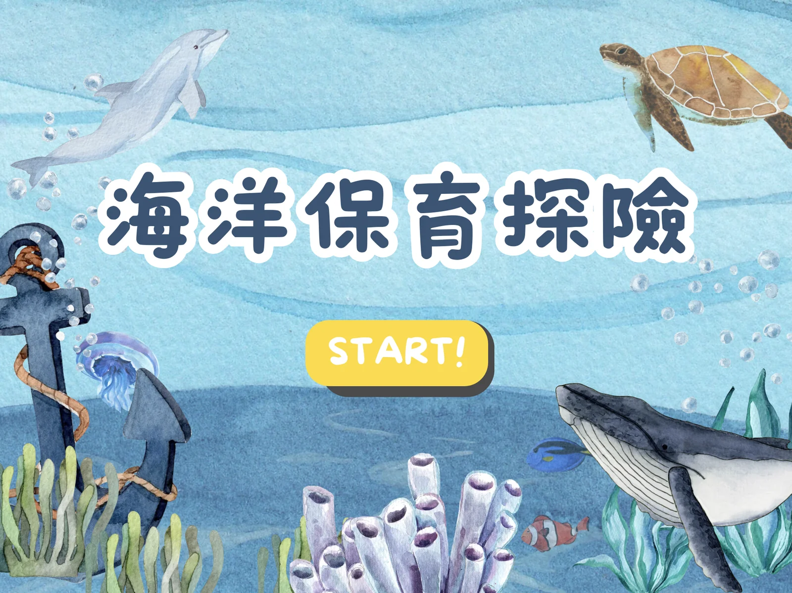
國科會大專生計畫，獨立完成 AR 互動裝置的介面視覺設計與教材架構統籌
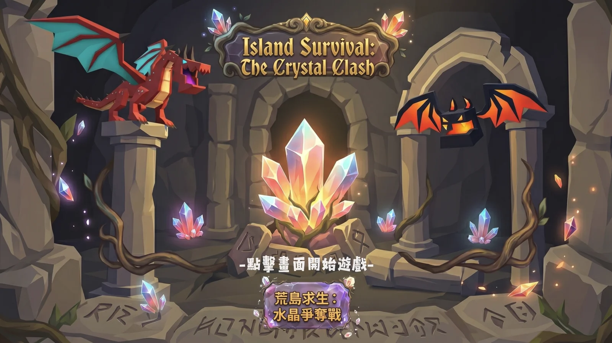
Unity 引擎獨立開發 3D 互動遊戲，以 C# 撰寫底層程式碼，掌控場景建構、物理碰撞與遊戲迴圈
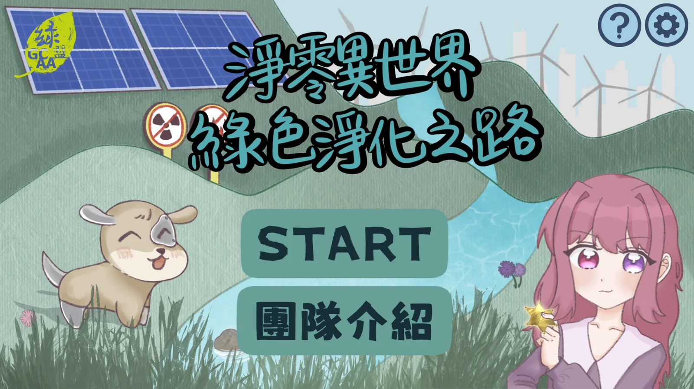
畢業專題，以 Construct 3 開發線上互動遊戲，涵蓋事件邏輯與腳本設計，獲全系評比第一名。同時擔任畢籌會公關長，負責 IG 帳號經營
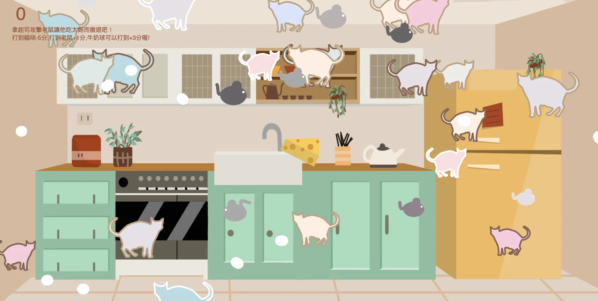
不依賴遊戲引擎，以原生 JavaScript 獨立開發網頁遊戲，手刻物件生成、碰撞偵測與計分機制
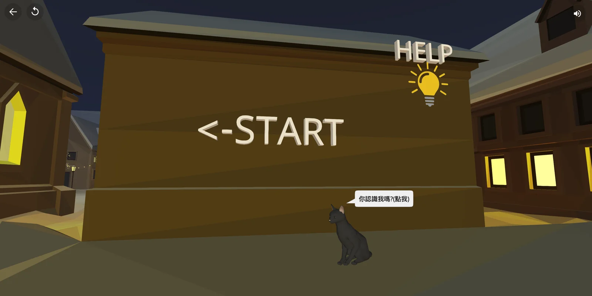
使用 CoSpaces 開發 3D 互動學習空間，將平面知識轉化為具空間邏輯與沉浸感的數位體驗
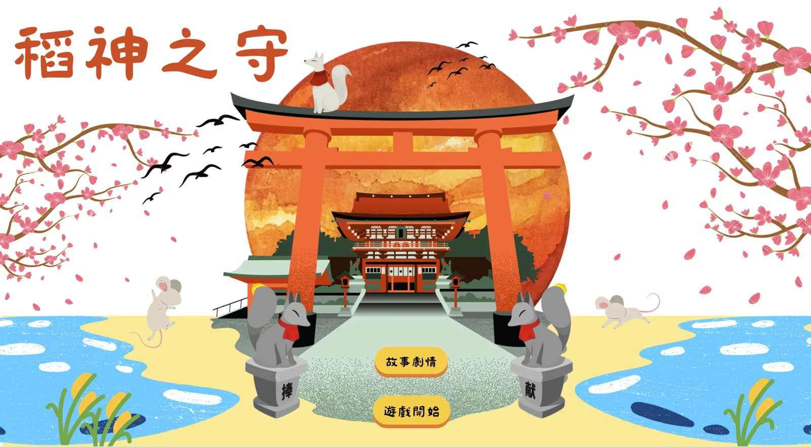
以 Construct 3 獨立開發 2D 互動遊戲，主題結合日本稻荷文化，掌控全端事件邏輯與數值變數設定
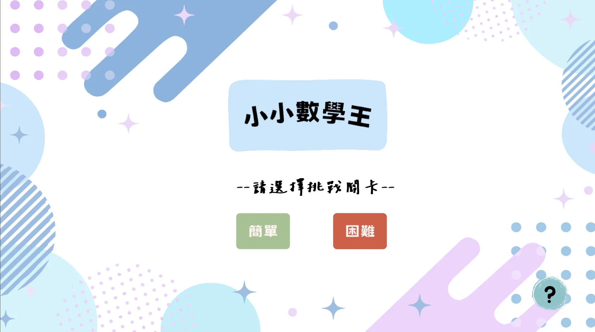
國小數學運算練習遊戲，針對低年齡層設計極低認知負擔的直覺化 UI，並撰寫題庫隨機生成與解答驗證邏輯（電腦版原型 Demo）
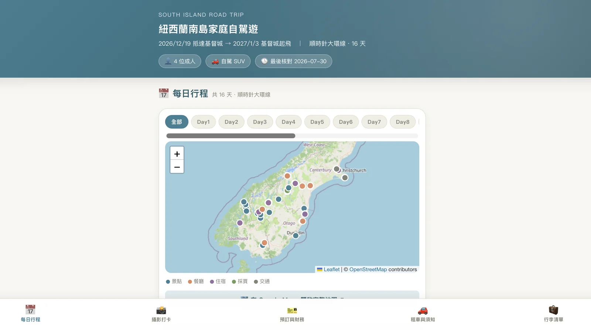
與 Claude AI 協作開發響應式網頁，加入打卡進度條動態計算與核取方塊狀態綁定功能